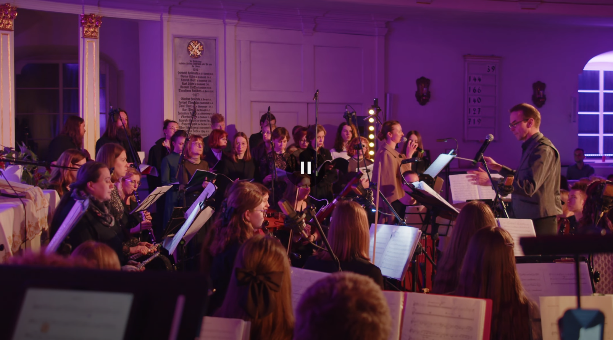
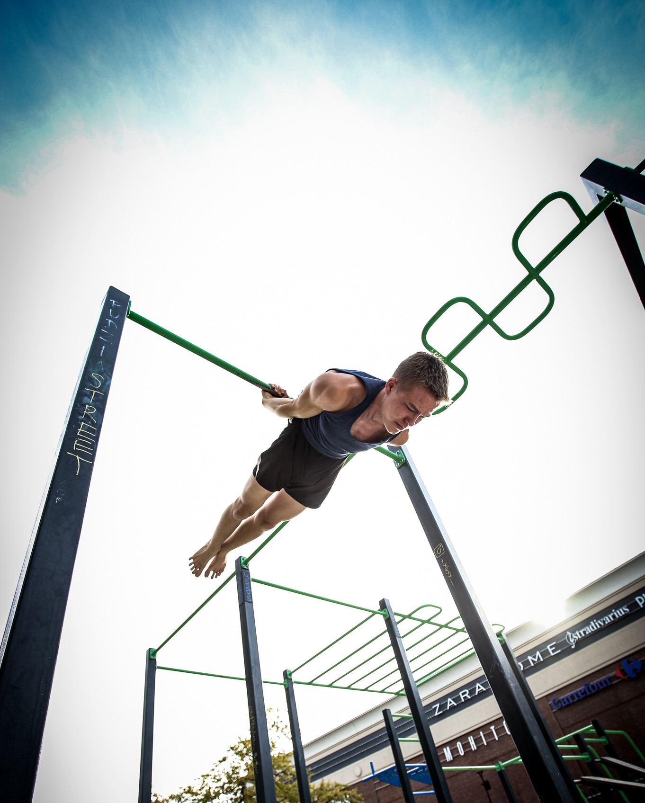

My name is Szymon Poparda. I'm a Data Engineer with a strong curiosity for new technologies in the field.
I learn through real-life projects that you can check out on this website. I participate in international projects with other people, by which
I develop my ability to cooperate and communicate with others, as well as to solve complex problems.
Additionally, I'm also a pianist in the SLOT Art Orchestra, music producer, calisthenics athlete and member of a debating society.
 - retusz.JPG)
Music is my great passion, which I constantly develop and enjoy. I play piano in the orchestra with which
I took part in international project "TOGETHER by Sami Kosola".

I'm also a Finalist of International Piano Competiton Wroclavile. Here you can find a recording of my performance.
On my youtube channel there are also other interesting recordings.
Feel free to check them out!

Through calisthenics training, I cultivate endurance and discipline.
I've improved my physique, mental health, and of course, met wonderful people through this sport.
It's one of those activities that's great for your health while also making you fall in love with the sport itself.
